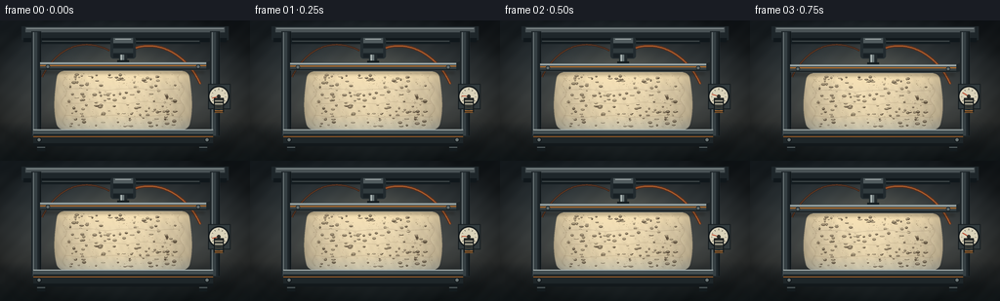
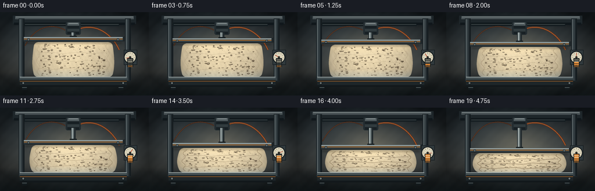
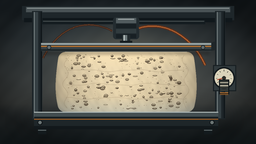
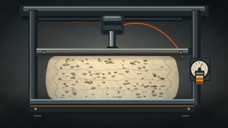
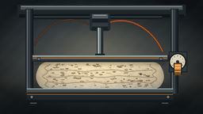

CODING AGENTS AS PIXEL WORLD MODELS
traex/DeepSeek-V4.1-Flash · mechanics_0021
点击播放 · 原生 RGB 像素
逐轮保存的候选
回放视频、检查图与代码变化。
每份候选均可单独播放。实际图片检查记录在下方工具轨迹中。
候选 01播放与检查图
点击播放 · 原生 RGB 像素


展开代码变化
--- 上一保存版本
+++ 本次保存版本
@@ -0,0 +1,449 @@
+"""Procedural timelapse of a foam mattress under increasing press pressure."""
+
+from __future__ import annotations
+
+import math
+from pathlib import Path
+
+import numpy as np
+from PIL import Image, ImageDraw, ImageFilter
+
+import artifact_io
+
+
+W, H = 256, 144
+S = 4
+BW, BH = W * S, H * S
+FRAMES = 20
+FPS = 4.0
+
+
+def rgb(value: tuple[int, int, int]) -> tuple[int, int, int]:
+ return tuple(int(v) for v in value)
+
+
+def mix(a: tuple[int, int, int], b: tuple[int, int, int], t: float) -> tuple[int, int, int]:
+ return rgb(tuple(a[i] * (1.0 - t) + b[i] * t for i in range(3)))
+
+
+def make_background() -> Image.Image:
+ yy, xx = np.indices((BH, BW), dtype=np.float32)
+ xn = xx / (BW - 1)
+ yn = yy / (BH - 1)
+
+ top = np.array([37, 47, 54], dtype=np.float32)
+ middle = np.array([85, 89, 87], dtype=np.float32)
+ floor = np.array([45, 58, 61], dtype=np.float32)
+ wall_t = np.clip(yn / 0.72, 0.0, 1.0)[..., None]
+ wall = top * (1.0 - wall_t) + middle * wall_t
+
+ horizon = 0.72
+ floor_t = np.clip((yn - horizon) / (1.0 - horizon), 0.0, 1.0)[..., None]
+ image = wall * (1.0 - floor_t) + floor * floor_t
+
+ # Warm pool of studio light behind the machine.
+ glow = np.exp(-(((xn - 0.49) / 0.34) ** 2 + ((yn - 0.42) / 0.36) ** 2) * 2.2)
+ image += glow[..., None] * np.array([30.0, 24.0, 14.0], dtype=np.float32)
+
+ # Cool rim light from the upper left.
+ rim = np.exp(-(((xn - 0.08) / 0.38) ** 2 + ((yn - 0.02) / 0.5) ** 2) * 2.0)
+ image += rim[..., None] * np.array([13.0, 17.0, 19.0], dtype=np.float32)
+
+ # Floor seams and vignette.
+ floor_mask = np.clip((yn - horizon) * 15.0, 0.0, 1.0)
+ image -= floor_mask[..., None] * np.array([3.0, 2.0, 0.0], dtype=np.float32)
+ vignette = np.clip(((xn - 0.5) ** 2 + (yn - 0.48) ** 2) * 1.9, 0.0, 0.62)
+ image *= (1.0 - vignette[..., None])
+
+ grain = (
+ np.sin(xx * 0.051 + yy * 0.027)
+ + np.sin(xx * 0.019 - yy * 0.061)
+ + np.sin((xx + yy) * 0.093)
+ ) * 0.72
+ image += grain[..., None]
+ return Image.fromarray(np.clip(image, 0, 255).astype(np.uint8), "RGB")
+
+
+def draw_metal_bar(
+ draw: ImageDraw.ImageDraw,
+ box: tuple[float, float, float, float],
+ base: tuple[int, int, int],
+ edge: tuple[int, int, int],
+ shine: tuple[int, int, int],
+) -> None:
+ x0, y0, x1, y1 = (round(v * S) for v in box)
+ draw.rectangle((x0, y0, x1, y1), fill=base)
+ draw.line((x0, y0, x1, y0), fill=shine, width=max(1, S // 2))
+ draw.line((x0, y0, x0, y1), fill=edge, width=max(1, S // 2))
+ draw.line((x1, y0, x1, y1), fill=edge, width=max(1, S // 2))
+
+
+def bezier(points: list[tuple[float, float]], steps: int = 80) -> list[tuple[float, float]]:
+ output = []
+ for step in range(steps + 1):
+ t = step / steps
+ p = points
+ while len(p) > 1:
+ p = [
+ ((1 - t) * p[i][0] + t * p[i + 1][0], (1 - t) * p[i][1] + t * p[i + 1][1])
+ for i in range(len(p) - 1)
+ ]
+ output.append((p[0][0] * S, p[0][1] * S))
+ return output
+
+
+def draw_machine_back(canvas: Image.Image) -> None:
+ draw = ImageDraw.Draw(canvas, "RGBA")
+
+ # Floor shadow of the press frame.
+ shadow = Image.new("RGBA", canvas.size, (0, 0, 0, 0))
+ sd = ImageDraw.Draw(shadow)
+ sd.ellipse((18 * S, 111 * S, 240 * S, 134 * S), fill=(4, 8, 10, 150))
+ shadow = shadow.filter(ImageFilter.GaussianBlur(12 * S))
+ canvas.alpha_composite(shadow) if canvas.mode == "RGBA" else canvas.paste(
+ Image.alpha_composite(canvas.convert("RGBA"), shadow).convert("RGB"), (0, 0)
+ )
+
+ draw = ImageDraw.Draw(canvas, "RGBA")
+
+ # Fixed top crown.
+ draw.rectangle((22 * S, 6 * S, 234 * S, 20 * S), fill=(30, 38, 42, 255))
+ draw.rectangle((26 * S, 7 * S, 230 * S, 12 * S), fill=(73, 82, 85, 255))
+ draw.line((27 * S, 8 * S, 229 * S, 8 * S), fill=(133, 142, 143, 210), width=S)
+ draw.rectangle((24 * S, 18 * S, 232 * S, 22 * S), fill=(16, 23, 27, 255))
+
+ # Two upright columns.
+ for cx in (32, 215):
+ draw.rectangle((cx * S, 11 * S, (cx + 10) * S, 119 * S), fill=(29, 37, 41, 255))
+ draw.rectangle(((cx + 2) * S, 12 * S, (cx + 6) * S, 118 * S), fill=(53, 63, 67, 255))
+ draw.line(((cx + 2) * S, 12 * S, (cx + 2) * S, 118 * S), fill=(112, 122, 124, 210), width=S)
+ draw.line(((cx + 9) * S, 12 * S, (cx + 9) * S, 118 * S), fill=(14, 20, 23, 255), width=S)
+
+ # Cross braces add depth without crowding the center.
+ draw.rectangle((42 * S, 20 * S, 205 * S, 24 * S), fill=(20, 28, 32, 255))
+ draw.line((43 * S, 21 * S, 204 * S, 21 * S), fill=(65, 73, 75, 190), width=S)
+
+ # Fixed hydraulic cylinder.
+ draw.rounded_rectangle((113 * S, 17 * S, 139 * S, 39 * S), radius=3 * S, fill=(35, 44, 48, 255))
+ draw.rectangle((116 * S, 18 * S, 136 * S, 23 * S), fill=(81, 91, 94, 255))
+ draw.line((118 * S, 19 * S, 134 * S, 19 * S), fill=(157, 166, 166, 210), width=S)
+ draw.rectangle((116 * S, 24 * S, 136 * S, 28 * S), fill=(24, 32, 36, 255))
+ draw.rectangle((116 * S, 29 * S, 136 * S, 33 * S), fill=(49, 59, 62, 255))
+ draw.rectangle((116 * S, 34 * S, 136 * S, 38 * S), fill=(24, 32, 36, 255))
+
+ # Orange hydraulic hoses loop behind the foam.
+ hose = bezier([(139, 28), (166, 20), (192, 37), (205, 65)], 100)
+ draw.line(hose, fill=(91, 47, 29, 255), width=3 * S, joint="curve")
+ draw.line(hose, fill=(180, 100, 47, 255), width=S, joint="curve")
+ hose2 = bezier([(112, 31), (85, 17), (58, 28), (43, 58)], 100)
+ draw.line(hose2, fill=(55, 36, 29, 255), width=2 * S, joint="curve")
+ draw.line(hose2, fill=(126, 75, 42, 255), width=max(1, S // 2), joint="curve")
+
+
+def foam_half_width(v: np.ndarray | float, compression: float) -> np.ndarray | float:
+ base = 66.0 * (1.0 + 0.15 * compression)
+ bulge = (4.2 + 5.2 * compression) * np.sin(np.pi * np.asarray(v))
+ asymmetry = 0.55 * np.sin(2.0 * np.pi * np.asarray(v) + 0.8)
+ return base + bulge + asymmetry
+
+
+def foam_geometry(compression: float) -> tuple[float, float]:
+ bottom = 112.0
+ thickness = 62.0 - 40.0 * compression
+ return bottom - thickness, bottom
+
+
+def make_foam(frame: int, compression: float) -> tuple[Image.Image, float, float]:
+ top, bottom = foam_geometry(compression)
+ cx = 126.0
+ thickness = bottom - top
+
+ yy, xx = np.indices((BH, BW), dtype=np.float32)
+ x = xx / S
+ y = yy / S
+ v = (bottom - y) / thickness
+ hw = foam_half_width(v, compression)
+
+ # Rounded upper and lower corners, with a little more edge squash under load.
+ radius = 6.0 * (1.0 - 0.35 * compression)
+ dist_top = np.maximum(0.0, top + radius - y)
+ dist_bottom = np.maximum(0.0, y - (bottom - radius))
+ corner_reduction = np.where(
+ dist_top < radius,
+ radius - np.sqrt(np.maximum(0.0, radius**2 - dist_top**2)),
+ 0.0,
+ )
+ corner_reduction += np.where(
+ dist_bottom < radius,
+ radius - np.sqrt(np.maximum(0.0, radius**2 - dist_bottom**2)),
+ 0.0,
+ )
+ hw = np.maximum(3.0, hw - corner_reduction)
+ q = (x - cx) / hw
+ inside = (q >= -1.0) & (q <= 1.0) & (y >= top) & (y <= bottom)
+ mask = (inside.astype(np.uint8) * 255)
+
+ # Soft, warped foam shading. Texture coordinates compress with the mattress.
+ edge = np.sqrt(np.clip(1.0 - q * q, 0.0, 1.0))
+ height_light = 0.90 + 0.15 * v
+ side_light = 0.63 + 0.37 * edge**0.38
+ center_glow = np.exp(-((q + 0.12) / 0.62) ** 2) * 0.07
+ fine = (
+ np.sin(25.0 * q + 9.0 * v + 0.4)
+ + np.sin(41.0 * q - 17.0 * v)
+ + np.sin(63.0 * q + 31.0 * v + 1.2)
+ ) * 0.010
+ shade = np.clip(height_light * side_light + center_glow + fine, 0.42, 1.08)
+
+ base_color = np.array([218.0, 201.0, 166.0], dtype=np.float32)
+ color = base_color[None, None, :] * shade[..., None]
+ # Cool reflected steel near the base and a warm top light.
+ bottom_cool = np.clip((0.25 - v) / 0.25, 0.0, 1.0)[..., None]
+ color += bottom_cool * np.array([-16.0, -4.0, 9.0], dtype=np.float32)
+ top_warm = np.clip((v - 0.72) / 0.28, 0.0, 1.0)[..., None]
+ color += top_warm * np.array([15.0, 11.0, 3.0], dtype=np.float32)
+
+ foam = Image.fromarray(np.clip(color, 0, 255).astype(np.uint8), "RGB").convert("RGBA")
+ pores = Image.new("RGBA", (BW, BH), (0, 0, 0, 0))
+ pd = ImageDraw.Draw(pores, "RGBA")
+
+ # Stable open-cell pore pattern; it stretches with the foam but never flickers.
+ rng = np.random.default_rng(84721)
+ for _ in range(150):
+ pv = float(rng.uniform(0.055, 0.945))
+ pq = float(rng.uniform(-0.88, 0.88))
+ px = cx + pq * float(foam_half_width(pv, compression)) * 0.91
+ py = bottom - pv * thickness
+ rx = float(rng.uniform(0.75, 2.35))
+ ry = float(rng.uniform(0.42, 1.55))
+ rx *= 1.0 + 0.20 * compression
+ ry *= 1.0 - 0.58 * compression
+ rx = max(0.42, rx)
+ ry = max(0.28, ry)
+ darkness = int(rng.integers(55, 112))
+ alpha = int(rng.integers(120, 205))
+ box = ((px - rx) * S, (py - ry) * S, (px + rx) * S, (py + ry) * S)
+ pd.ellipse(box, fill=(62, 50, 36, alpha), outline=(55, 42, 30, min(230, alpha + 20)), width=max(1, S // 2))
+ pd.arc(
+ ((px - rx * 0.72) * S, (py - ry * 0.68) * S, (px + rx * 0.72) * S, (py + ry * 0.68) * S),
+ 195,
+ 330,
+ fill=(255, 244, 207, max(40, 150 - darkness)),
+ width=max(1, S // 2),
+ )
+
+ # Fine pores make the material read as foam rather than upholstery.
+ for _ in range(230):
+ pv = float(rng.uniform(0.035, 0.965))
+ pq = float(rng.uniform(-0.94, 0.94))
+ px = cx + pq * float(foam_half_width(pv, compression)) * 0.94
+ py = bottom - pv * thickness
+ rr = float(rng.uniform(0.18, 0.55))
+ pd.ellipse(
+ ((px - rr) * S, (py - rr * 0.65) * S, (px + rr) * S, (py + rr * 0.65) * S),
+ fill=(91, 75, 52, int(rng.integers(55, 105))),
+ )
+
+ # Compression creases strengthen as load rises.
+ crease_strength = max(0.0, (compression - 0.16) / 0.84)
+ for crease_index, vv in enumerate((0.23, 0.46, 0.69)):
+ yv = bottom - vv * thickness
+ half = float(foam_half_width(vv, compression))
+ pts = []
+ for step in range(85):
+ qq = -0.84 + 1.68 * step / 84
+ wave = 0.9 * math.sin(qq * 8.5 + crease_index * 1.8) + 0.35 * math.sin(qq * 18.0)
+ pts.append(((cx + qq * half) * S, (yv + wave) * S))
+ alpha = int(28 + 92 * crease_strength)
+ pd.line(pts, fill=(87, 68, 47, alpha), width=max(S, int((0.7 + 1.25 * crease_strength) * S)), joint="curve")
+ pd.line(
+ [(px, py + S * 0.8) for px, py in pts],
+ fill=(245, 228, 190, int(20 + 45 * crease_strength)),
+ width=max(1, S // 2),
+ joint="curve",
+ )
+
+ # Dark compressed folds along the sides.
+ for sign in (-1, 1):
+ pts = []
+ for step in range(50):
+ vv = 0.06 + 0.88 * step / 49
+ yy2 = bottom - vv * thickness
+ qq = sign * (0.86 + 0.035 * math.sin(vv * 19.0 + sign))
+ pts.append(((cx + qq * float(foam_half_width(vv, compression))) * S, yy2 * S))
+ pd.line(
+ pts,
+ fill=(101, 79, 55, int(45 + 105 * compression)),
+ width=max(1, int((0.6 + 0.8 * compression) * S)),
+ joint="curve",
+ )
+
+ pore_alpha = np.asarray(pores.getchannel("A"), dtype=np.uint8)
+ pores.putalpha(Image.fromarray(np.minimum(pore_alpha, mask), "L"))
+ foam = Image.alpha_composite(foam, pores)
+ foam.putalpha(Image.fromarray(mask, "L"))
+
+ # A crisp top edge and softer contact shadow.
+ edge_draw = ImageDraw.Draw(foam, "RGBA")
+ edge_draw.line(
+ ((cx - float(foam_half_width(1.0, compression)) + radius) * S, top * S,
+ (cx + float(foam_half_width(1.0, compression)) - radius) * S, top * S),
+ fill=(255, 243, 207, 205),
+ width=max(1, S // 2),
+ )
+ edge_draw.line(
+ ((cx - float(foam_half_width(0.0, compression)) + radius) * S, bottom * S,
+ (cx + float(foam_half_width(0.0, compression)) - radius) * S, bottom * S),
+ fill=(77, 61, 43, 180),
+ width=S,
+ )
+ return foam, top, bottom
+
+
+def draw_platen(canvas: Image.Image, top: float, compression: float) -> None:
+ draw = ImageDraw.Draw(canvas, "RGBA")
+ cx = 126
+ y = top - 1.0
+ left, right = 41, 211
+
+ # Rod from the fixed cylinder down to the moving platen.
+ rod_top = 35.0
+ draw.rectangle((122 * S, rod_top * S, 130 * S, (y - 7) * S), fill=(34, 42, 45, 255))
+ draw.rectangle((123 * S, rod_top * S, 127 * S, (y - 7) * S), fill=(108, 120, 121, 255))
+ draw.line((124 * S, rod_top * S, 124 * S, (y - 7) * S), fill=(194, 202, 199, 220), width=S)
+ draw.rectangle((120 * S, (y - 10) * S, 132 * S, (y - 6) * S), fill=(22, 29, 32, 255))
+
+ # Slight side extrusion gives the steel press a three-dimensional read.
+ draw.polygon(
+ (
+ (right * S, (y - 8) * S),
+ ((right + 5) * S, (y - 10) * S),
+ ((right + 5) * S, (y - 1) * S),
+ (right * S, y * S),
+ ),
+ fill=(31, 38, 41, 255),
+ )
+ draw.rectangle((left * S, (y - 8) * S, right * S, y * S), fill=(55, 65, 69, 255))
+ draw.rectangle((left * S, (y - 8) * S, right * S, (y - 6) * S), fill=(104, 116, 117, 255))
+ draw.line((left * S, (y - 7) * S, right * S, (y - 7) * S), fill=(176, 186, 185, 220), width=S)
+ draw.line((left * S, (y - 1) * S, right * S, (y - 1) * S), fill=(22, 29, 31, 255), width=S)
+ draw.rectangle((left * S, (y - 5) * S, right * S, (y - 4) * S), fill=(179, 111, 45, 255))
+
+ for bx in (49, 203):
+ draw.ellipse(((bx - 2.2) * S, (y - 5.6) * S, (bx + 2.2) * S, (y - 1.2) * S), fill=(31, 38, 41, 255))
+ draw.ellipse(((bx - 1.3) * S, (y - 4.9) * S, (bx + 1.3) * S, (y - 2.0) * S), fill=(98, 108, 109, 255))
+
+ # Contact shadow beneath the platen, growing as compression increases.
+ shadow = Image.new("RGBA", canvas.size, (0, 0, 0, 0))
+ sd = ImageDraw.Draw(shadow)
+ sd.rectangle(
+ ((left + 2) * S, (y + 1) * S, (right - 2) * S, (y + 3.5) * S),
+ fill=(28, 22, 15, int(85 + 60 * compression)),
+ )
+ shadow = shadow.filter(ImageFilter.GaussianBlur((1.4 + compression) * S))
+ canvas.alpha_composite(shadow) if canvas.mode == "RGBA" else canvas.paste(
+ Image.alpha_composite(canvas.convert("RGBA"), shadow).convert("RGB"), (0, 0)
+ )
+
+
+def draw_base(canvas: Image.Image, bottom: float) -> None:
+ draw = ImageDraw.Draw(canvas, "RGBA")
+ left, right = 34, 218
+ top = bottom
+ draw.rectangle((left * S, (top + 5) * S, right * S, (top + 17) * S), fill=(30, 38, 41, 255))
+ draw.rectangle((left * S, top * S, right * S, (top + 5) * S), fill=(66, 77, 80, 255))
+ draw.line((left * S, top * S, right * S, top * S), fill=(171, 181, 180, 230), width=S)
+ draw.line((left * S, (top + 5) * S, right * S, (top + 5) * S), fill=(21, 28, 31, 255), width=S)
+ draw.rectangle((left * S, (top + 14) * S, right * S, (top + 17) * S), fill=(18, 24, 27, 255))
+ draw.line((left * S, (top + 7) * S, right * S, (top + 7) * S), fill=(156, 92, 37, 255), width=S)
+ for bx in (40, 212):
+ draw.ellipse(((bx - 2.5) * S, (top + 8) * S, (bx + 2.5) * S, (top + 13) * S), fill=(18, 24, 27, 255))
+ draw.ellipse(((bx - 1.6) * S, (top + 8.8) * S, (bx + 1.6) * S, (top + 12.1) * S), fill=(107, 116, 116, 255))
+
+ # Feet anchor the machine to the floor.
+ for fx in (42, 208):
+ draw.rectangle(((fx - 4) * S, (top + 17) * S, (fx + 4) * S, (top + 22) * S), fill=(19, 26, 29, 255))
+ draw.line(((fx - 4) * S, (top + 18) * S, (fx + 4) * S, (top + 18) * S), fill=(91, 101, 102, 210), width=S)
+
+
+def draw_gauge(canvas: Image.Image, pressure: float) -> None:
+ draw = ImageDraw.Draw(canvas, "RGBA")
+ gx, gy, gr = 224.0, 78.0, 10.8
+
+ # Mount bracket.
+ draw.rectangle(((gx - 11) * S, (gy - 13) * S, (gx + 12) * S, (gy + 13) * S), fill=(24, 31, 34, 255))
+ draw.rectangle(((gx - 10) * S, (gy - 12) * S, (gx + 11) * S, (gy + 12) * S), fill=(49, 58, 61, 255))
+ draw.ellipse(((gx - gr) * S, (gy - gr) * S, (gx + gr) * S, (gy + gr) * S), fill=(21, 27, 30, 255))
+ draw.ellipse(((gx - gr + 1.5) * S, (gy - gr + 1.5) * S, (gx + gr - 1.5) * S, (gy + gr - 1.5) * S), fill=(218, 211, 186, 255))
+
+ for tick in range(9):
+ angle = math.radians(145 + 250 * tick / 8)
+ r0 = 6.7
+ r1 = 8.4 if tick in (0, 4, 8) else 7.8
+ draw.line(
+ (
+ (gx + math.cos(angle) * r0) * S,
+ (gy + math.sin(angle) * r0) * S,
+ (gx + math.cos(angle) * r1) * S,
+ (gy + math.sin(angle) * r1) * S,
+ ),
+ fill=(53, 52, 46, 255),
+ width=max(1, S // 2),
+ )
+
+ # Sweep covers 250 degrees, starting just above the lower-left rim.
+ angle = math.radians(145 + 250 * (0.08 + 0.92 * pressure))
+ draw.line(
+ ((gx - math.cos(angle) * 1.3) * S, (gy - math.sin(angle) * 1.3) * S,
+ (gx + math.cos(angle) * 7.2) * S, (gy + math.sin(angle) * 7.2) * S),
+ fill=(184, 70, 42, 255),
+ width=max(2, S),
+ )
+ draw.ellipse(((gx - 1.8) * S, (gy - 1.8) * S, (gx + 1.8) * S, (gy + 1.8) * S), fill=(45, 45, 40, 255))
+
+ # Five pressure lamps beside the dial.
+ lit = min(5, 1 + int(pressure * 5))
+ for i in range(5):
+ y0 = (gy + 14.5 - i * 3.1) * S
+ color = (229, 137, 51, 255) if i < lit else (54, 57, 53, 255)
+ draw.rectangle(((gx - 4) * S, y0, (gx + 4) * S, y0 + 2 * S), fill=color)
+ draw.rectangle(((gx - 5) * S, (gy + 1.5) * S, (gx + 5) * S, (gy + 16) * S), outline=(16, 22, 25, 255), width=S)
+
+
+def render_frame(index: int) -> np.ndarray:
+ t = index / (FRAMES - 1)
+ compression = 0.045 + 0.675 * (t**1.32)
+ pressure = t**0.88
+
+ canvas = make_background().convert("RGBA")
+ draw_machine_back(canvas)
+
+ # The foam is rendered as a deformed body and seated on the fixed bed.
+ foam, top, bottom = make_foam(index, compression)
+ canvas.alpha_composite(foam)
+ draw_platen(canvas, top, compression)
+ draw_base(canvas, bottom)
+ draw_gauge(canvas, pressure)
+
+ # Gentle exposure lift around the action and a faint studio haze.
+ yy, xx = np.indices((BH, BW), dtype=np.float32)
+ xn = xx / (BW - 1)
+ yn = yy / (BH - 1)
+ action_light = np.exp(-(((xn - 0.48) / 0.30) ** 2 + ((yn - 0.61) / 0.24) ** 2) * 2.2)
+ image = np.asarray(canvas.convert("RGB"), dtype=np.float32)
+ image += action_light[..., None] * np.array([9.0, 8.0, 5.0], dtype=np.float32)
+ image = np.clip(image, 0, 255).astype(np.uint8)
+
+ small = Image.fromarray(image, "RGB").resize((W, H), Image.Resampling.LANCZOS)
+ return np.asarray(small, dtype=np.uint8)
+
+
+def main() -> None:
+ case_dir = Path(__file__).resolve().parent
+ frames = np.stack([render_frame(i) for i in range(FRAMES)])
+ artifact_io.save(frames, case_dir)
+ print(f"saved {FRAMES} frames at {W}x{H}, {FPS:g} fps")
+
+
+if __name__ == "__main__":
+ main()
可观测工具轨迹
实际执行的命令与返回图片。
命令 1exit 0
/bin/bash -c "pwd && rg --files -g 'prompt.txt' -g 'GENERATION_RULES.md' -g 'task_spec.json' -g '"'!node_modules'"' -g '"'!vendor'"'"
命令 2exit 0
/bin/bash -c "git status --short && find . -maxdepth 2 -type f | sed 's#"'^./##'"' | sort | head -200"
命令 3exit 0
/bin/bash -c 'cat prompt.txt'
命令 4exit 0
/bin/bash -c 'cat GENERATION_RULES.md'
命令 5exit 0
/bin/bash -c 'cat task_spec.json'
命令 6exit 0
/bin/bash -c "sed -n '1,260p' artifact_io.py"
命令 7exit 0
/bin/bash -c "python - <<'PY'
import sys
print(sys.version)
for name in ['numpy','PIL','scipy','cv2','imageio','skimage']:
try:
m=__import__(name)
print(name, getattr(m,'__version__','ok'))
except Exception as e:
print(name, 'missing')
PY"命令 8exit 0
/bin/bash -c 'which ffmpeg || true'
命令 9exit 0
/bin/bash -c "python - <<'PY'
import imageio
try:
import imageio_ffmpeg
print('imageio_ffmpeg', imageio_ffmpeg.get_ffmpeg_exe())
except Exception as e: print(e)
PY"命令 10exit 0
/bin/bash -c "python - <<'PY'
from PIL import ImageFont
for p in ['/usr/share/fonts/truetype/dejavu/DejaVuSans.ttf','/usr/share/fonts/truetype/dejavu/DejaVuSans-Bold.ttf','/usr/share/fonts/truetype/liberation2/LiberationSans-Regular.ttf']:
try:
f=ImageFont.truetype(p,12); print('yes',p)
except: print('no',p)
PY"命令 11exit 0
/bin/bash -c 'python generate.py'
命令 12exit 0
/bin/bash -c "find . -maxdepth 2 -type f -printf '%p %s bytes\\n' | sort"
命令 13exit 0
/bin/bash -c "python -m py_compile generate.py && python - <<'PY'
import json
import numpy as np
from PIL import Image
from pathlib import Path
p=Path('.')
spec=json.loads((p/'task_spec.json').read_text())
data=np.load(p/'pixels.npz')['pixels']
frames=np.stack([np.asarray(Image.open(p/'frames'/f'{i:02d}.png').convert('RGB')) for i in range(spec['frames'])])
print('pixels.npz', data.shape, data.dtype)
print('png frames', frames.shape, frames.dtype)
print('expected', (spec['height'],spec['width'],spec['frames']))
print('frame deltas mean/min/max', *[round(float(x),3) for x in (np.abs(np.diff(frames.astype(np.int16),axis=0)).mean(axis=(1,2,3)).mean(), np.abs(np.diff(frames.astype(np.int16),axis=0)).mean(axis=(1,2,3)).min(), np.abs(np.diff(frames.astype(np.int16),axis=0)).mean(axis=(1,2,3)).max())])
print('all finite / nonblank:', np.isfinite(frames).all(), frames.min(), frames.max())
PY"命令 14exit 0
/bin/bash -c 'git status --short -- . && git diff --stat -- .'
命令 15exit 0
/bin/bash -c 'git rev-parse --is-inside-work-tree 2>&1; git check-ignore -v generate.py frames/00.png index.html pixels.npz 2>&1 || true; git status --short --untracked-files=all -- . 2>&1 | head -40'
视觉工具实际返回图片 1

视觉工具实际返回图片 2

视觉工具实际返回图片 3

视觉工具实际返回图片 4

视觉工具实际返回图片 5

保存候选 1 份；完成命令 15 次；可验证图片返回 5 张。原始 API 响应与完整日志保留在本地。